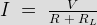
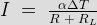
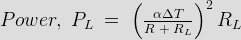
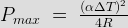
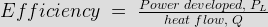
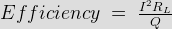
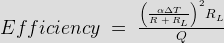

Efficiency of Thermoelectric Power Generator
• Materials Suitable
• Application
• Limitations
The term theroelectric is combination of two words thermo and electric and as its name indicates thermal means heat energy and electric means electrical energy. Thermoelectric power generators are the devices which used to convert temperature difference between two junctions into electrical energy. A working of thermoelectric generator is based on Seebeck effect. According to which, a loop of two dissimilar metal develops an emf when the two junctions are kept at different temperature. That is why it is also referred as Seebeck Power Generation. A thermo-electrical generator basically consists of heat source, which is kept at high temperature and a heat sink, which is maintained at a temperature less than the heat source. The temperature difference between heat source and heat sink causes direct electric current to flow through the load. In this type of energy conversion there is no intermediate energy conversion like in case of most of the conversion so, it is also called direct power conversion. The power generated due to Seebeck power generation is single phase DC and given by I2RL or VI where RL is the load resistance.
The output voltage and output power are increased either by increasing the temperature difference between the hot and cold ends or by connecting several thermoelectric power generators in series. The electric current will continue to flow as long as heat is supplied to the hot junction and removed from the cold junction. This electric current produced by thermoelectric or Seebeck power generation is DC in nature and can be converted into ac by using invertors and its voltage level can be further step up by using transformers. The energy conversion through thermoelectric or Seebeck power generation is reversible process i.e the direction of energy flow can be reversed. If we remove load and supply DC power across the terminals where load was connected, the heat can be easily drawn from the thermoelectric power generator.
Performance Analysis of Thermoelectric Power Generator
Thermoelectric Power Generator
Consider a thermoelectric power generator having heat source at one end and heat sink at other end. The heat source is kept at high temperature as compare to heat sink. Let the temperature difference between two junctions is ΔT. The sides of generating device are insulated so, the heat flows along the length only. The applied heat to the hot junction causes the electrons in the n type block and the holes in the p type block to flow away from the heat junction and thereby producing a electrical potential difference. The circuit is completed by connecting a load resistance, RL. The electric current will start flowing through this load resistance, RL.
The voltage of this generator is given by V = α ΔT where α is Seebeck coefficient and ΔT is the temperature difference between hot and cold junction. Let R is the internal resistance of the thermoelectric power generator then the electric current flowing through the external resistance RL is given by

Substitute the value of voltage in above equation we get current,

We know that power flow to external load is given by, PL = I2RL
Substitute the value of I

This power will be maximum when R = RL
So, maximum power is given by

In Seebeck Power Generation the term (α2 / R) is called figure of merit. For power to be maximum ΔT and (α2 / R) should have large value or we can say internal resistance should be low and this can be done by decreasing the length and increasing the diameter. ΔT can be increased by increasing the temperature difference between heat source and heat sink.
Efficiency of Thermoelectric Power Generator
The efficiency of thermoelectric power generator is defined as the ratio of power developed, PL across load resistance, RL to the heat flow, Q from the source



Materials Suitable for Thermoelectric Power Generators
The most commonly used material for this generator is lead telluride. Lead telluride is a compound made of lead and tellurium having small amount of bismuth or sodium. Other compounds used for making thermoelectric power generators are bismuth telluride, bismuth sulphide, germanium telluride, zinc antimonite, tin telluride and indium arsenide etc.
Application of Thermoelectric Generators
• For increasing the fuel efficiency of cars, thermoelectric generators are used. These generator use heat produced when the vehicle is running.
• Seebeck Power Generation is used to supply power to spacecrafts.
• These generators are used to supply power to remote stations like weather stations, relay stations etc.
Limitations of Thermoelectric Power Generators
• High output resistance required - As explained earlier for getting high output voltage and power several thermoelectric generators are connected in series, which in turn increases the total output resistance. Therefore for transferring high power efficiently large resistances are needed. This problem can be overcome by connecting more thermoelectric elements in parallel rather in series because it causes decrease in effective resistance.
• Thermoelectric power generators generate less electric power for the same heat flow i.e they have low efficiency as compared to other mechanical generators. For the same energy input, the Seebeck Power Generation produces less output as compare to other energy converters.
• Low thermal characteristics - The heat dissipation of any device depends upon its thermal conductivity. Any good thermoelectric power generator has low thermal conductivity and hence poor heat dissipation. So, these generators are efficient only when small power is required.
• Thermoelectric generators are costly as compare to other generators.
 by
by